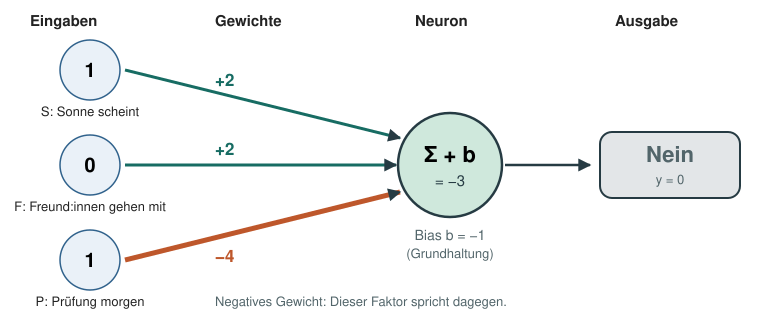
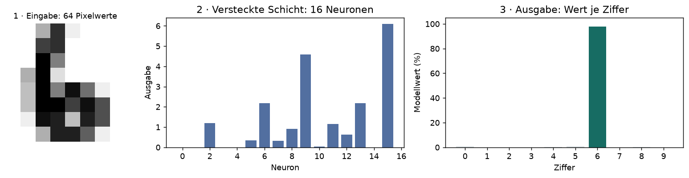
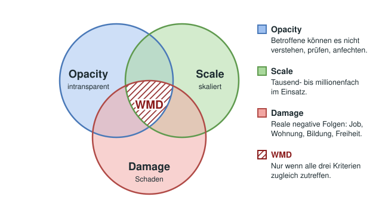
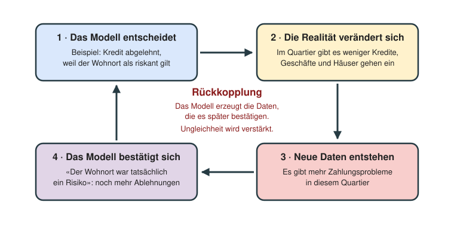

KI einordnen
- Ich unterscheide KI, maschinelles Lernen und neuronale Netze und ordne Beispiele begründet zu.
- Ich erkläre, warum nicht jedes KI-System aus Daten lernt.
Begriffe ordnen · Beispiele prüfen
2. DoppellektionMemory · NIM · drei Lernarten
3. DoppellektionGewichte · Bias · Grenzen
4. DoppellektionZwischenschichten · Daten aufteilen
5.–8. DoppellektionZu zweit forschen · Journal führen
9. DoppellektionTexte vorhersagen · Grenzen erkennen
10. DoppellektionFolgen beurteilen · Lösungen abwägen
Sie erklären, experimentieren und beurteilen – mit konkreten Beispielen.
Benotet wird das Tandemprojekt mit den Kompetenzen K1–K10. Die Lernziele zu Sprachmodellen und Gesellschaft gehören zum anschliessenden Unterricht und fliessen nicht nachträglich in die Projektnote ein.
Bewertungsraster öffnen →Was können Sie bereits erklären? Schätzen Sie sich selbst ein – ohne Benotung.
Ich grenze eine Anwendung ein, definiere eindeutige Klassen und formuliere eine überprüfbare Vermutung.
Nachweis: Steckbrief und Reflexion 1
Ich erkläre Training, Validierung und Test und zeige, warum ganze Objekte oder Personen getrennt bleiben müssen.
Nachweis: Datenplan und Reflexion 2
Ich unterscheide Bildmatrix, feste Merkmale und eigenes Netz. Ich erkläre Labels, Gewichte, Vorhersage und Epoche.
Nachweis: Netzaufbau und Fachgespräch
Ich benenne die veränderte Grösse, die konstanten Bedingungen und die Rolle des festen Startwerts.
Nachweis: Versuchsplan und Reflexion 3
Ich interpretiere Balkendiagramme, Verwechslungsmatrix, Prozentpunkte und die Grenzen eines einzelnen Laufs.
Nachweis: Auswertung in Reflexion 3
Ich unterscheide Beobachtung und Erklärung, erkenne mögliche Überanpassung und begrenze Aussagen auf die untersuchten Daten.
Nachweis: Fehleranalyse und Fazit
Ich begründe die Modellwahl anhand der Validierung und erkläre, warum der Abschlusstest erst danach erfolgt.
Nachweis: Reflexion 4
Ich erkläre auch den Arbeitsteil meines Tandempartners und entwickle einen begründeten nächsten Versuch mit neuen Daten.
Nachweis: Fachgespräch und Reflexion 5
Eigene Bilder. Ein neuronales Netz. Ein fairer Vergleich – zu zweit.
Bewertet wird Ihre Untersuchung – nicht die höchste Trefferquote.
Sechs Arbeitsschritte, fünf Reflexionen. Schreiben Sie die Reflexionen im Journal der Kursseite.
Rückblick: In Doppellektion 4 haben Sie Thema und Klassen gewählt sowie die Datentrennung geklärt. Sie übernehmen jetzt die Planung Ihres Projekts im Tandem.
Heute können Sie: Eigene Tagesziele und Arbeitsschritte planen, eine überprüfbare Vermutung formulieren und die Datenqualität kontrollieren.
Wie organisieren wir eine faire Untersuchung zur Datenvielfalt?
Warum das wichtig ist: Selbst organisiert lernen heisst: Ziele setzen, Entscheidungen begründen, Fortschritte prüfen und bei Bedarf gezielt Hilfe nutzen.
Rückblick: In Doppellektion 5 haben Sie Ihren Lernweg geplant. Heute setzen Sie an Ihrem eigenen Arbeitsstand an, nicht an einem neuen gemeinsamen Rezept.
Heute können Sie: Den eigenen Arbeitsplan steuern und einen fairen Vergleich mit Belegen und alternativen Erklärungen auswerten.
Was zeigen unsere Daten, und welche andere Erklärung ist möglich?
Warum das wichtig ist: Ein gutes Ergebnis ist nicht eine hohe Trefferquote, sondern ein nachvollziehbarer Vergleich und eine ehrliche Interpretation.
Rückblick: Sie haben in Ihrem eigenen Tempo Daten geprüft und Varianten verglichen. Heute organisieren Sie den Abschluss und prüfen Ihre Belege.
Heute können Sie: Die Untersuchung selbstständig abschliessen, Grenzen belegen und den eigenen Arbeitsprozess reflektieren.
Was können wir mit unseren Ergebnissen begründet behaupten?
Warum das wichtig ist: Zum selbst organisierten Arbeiten gehört, einen klaren Schluss zu ziehen und ungesicherte Behauptungen sichtbar zu machen.
Rückblick: Ihr eigener Abgabestand ist eingefroren. Während der Fachgespräche untersuchen Sie selbstständig das Modell eines anderen Tandems.
Heute können Sie: Das eigene Projekt gemeinsam erklären und das Modell eines anderen Tandems anhand reproduzierter Ergebnisse und neuer Bilder kritisch auswerten.
Was zeigt das fremde Modell, und wie weit dürfen wir seinen Ergebnissen trauen?
Warum das wichtig ist: Eine unabhängige Prüfung zeigt, was nachvollziehbar ist und was eine hohe Trefferquote nicht beweist.
In Doppellektion 5–7 planen und steuern Sie Ihre Arbeit im Tandem selbst. Die Etappen sind keine festen Lektionstermine. In Doppellektion 8 folgen Fachgespräch und Fremdauswertung.
Verbindlich: fünf Datengruppen, fairer A/B-Vergleich, fünf Reflexionen, Auswahl vor Testeinsicht und danach keine Optimierung. Abgabe vor Beginn der Doppellektion 8.
Sie entscheiden: Thema im genehmigten Rahmen, Tagesziele, Zeitverteilung, Rollen und Hilfen. Planen Sie in Reflexion 1 die Etappen, Zuständigkeiten und Reserve. Halten Sie am Ende jeder Arbeitsphase kurz fest: erreicht, offen, nächster Schritt, benötigte Hilfe. Reflektieren Sie Ihren Plan in Reflexion 5. Kein zusätzliches Lerntagebuch. Beratung und Lernlabor nutzen Sie nach Bedarf.
Reihenfolge aus fachlichen Gründen: Daten prüfen → A/B vergleichen → Auswahl begründen → Abschlusstest → Fazit und Abgabe. Wie Sie diese Etappen auf die Arbeitszeit verteilen, planen Sie selbst.
8. Doppellektion, während der Tandemgespräche: Reproduktionscheck (Teil der unbenoteten Fremdauswertung) → und Fremdtest und Rückmeldung →
Die Häkchen werden nur in diesem Browser gespeichert. Sie sind keine Abgabe an die Lehrperson.
Wählen Sie zwei Klassen. Formulieren Sie einen Nutzen und vermuten Sie: Helfen vielfältigere Trainingsbilder?
Reflexion 1: Anwendung und Vermutung.
Zum Ideenpool →Fünf unabhängige Gruppen, zwei Klassen, je acht Fotos. Dieselben Objekte bleiben immer in derselben Gruppe.
Beide Klassen unter gleichen Bedingungen fotografieren (Hintergrund, Licht). Personen nur mit Einverständnis. Die Checkliste steht im Versuchsnotebook.
Reflexion 2: Datenplan, Quellen und Grenzen.
So funktioniert die Aufteilung →Erst den Ablauf mit Übungsdaten starten, dann eigene Daten importieren. A lernt aus einem Exemplar je Klasse, B aus zwei. Beide erhalten acht Bilder je Klasse.
Der vorbereitete Vergleich läuft mit einem festen Startwert.
Vergleichen Sie die Validierungswerte und konkrete Vorhersagen. Wählen Sie A oder B und begründen Sie dies vor Testeinsicht.
Reflexion 3: Ergebnis, Erklärung und Auswahl.
Den Vergleich verstehen →Prüfen Sie nur die gewählte Variante auf P1 und P2. Danach nichts mehr optimieren.
Reflexion 4: drei Beispiele und Grenzen; richtige Beispiele sind erlaubt.
Reflexion 5: Fazit, Grenzen und nächster Versuch.
Sichern Sie Journal mit Ausgaben, Fotos/JSON und Protokoll. Beide bereiten sich auf das gemeinsame Fachgespräch vor.
Zur Abgabecheckliste →| Termin | Rahmen | Verbindlicher Stand |
|---|---|---|
| 4. Doppellektion | Thema freigeben; Datenplan und Fotos vorbereiten | Zwei Klassen und fünf unabhängige Gruppen planen |
| Doppellektionen 5–7 | Sie legen Tagesziele fest, teilen die Arbeit auf und holen bei Bedarf Hilfe | Datencheck → Vergleich → begründete Auswahl → Test → Fazit; Etappen frei auf die Zeit verteilen |
| Vor Beginn der Doppellektion 8 | ZIP über den Abgabekanal einreichen | Vollständiges Journal, Versuch mit Ausgaben, Daten und Protokoll |
| 8. Doppellektion | Fachgespräche; parallel selbstständige Fremdauswertung | Ein Reproduktionslauf, Fremdtest und kurze Rückmeldung; unbenotet, eigene Abgabe unverändert |
Alle Fachgespräche finden in Doppellektion 8 statt. Reihenfolge und gleiche Dauer vorab bekannt; keine weiteren Gesprächstermine.
Wählen Sie eine Idee. Eigene Themen nach Absprache.
Klassen: PET-Flasche, Dose
Erkennt das Netz andere Exemplare und Verpackungen?
Klassen: Stift, Radiergummi
Wie gut überträgt es auf andere Modelle und Farben?
Klassen: Gabel, Löffel
Helfen mehr unterschiedliche Exemplare?
Klassen: Faust, offene Hand
Erkennt das Modell Gesten neuer Personen?
Klassen: Apfel, Birne
Welche Verwechslungen treten bei neuen Früchten auf?
Klassen: zwei Baumarten
Erkennt es Blattform oder Aufnahmehintergrund? Saison beachten: Sammlung früh planen.
Klassen: Schuh, Handschuh
Funktioniert es mit anderen Farben und Materialien?
Klassen: Hammer, Zange
Wie gut erkennt es andere Bauformen?
Klassen: Würfel, Kugel
Welche Rolle spielen unterschiedliche Exemplare?
Klassen: Herz, Stern
Erkennt es Symbole neuer zeichnender Personen?
Klassen: Herz, Pik
Überträgt es auf andere Kartendesigns? Ganze Decks als Gruppen.
Klassen: frei, belegt
Sind die Klassen eindeutig? Ganze Arbeitsplätze als Gruppen.
Kein Thema gefunden. Probieren Sie einen anderen Suchbegriff oder wählen Sie «Alle Themen».
Helfen vielfältigere Trainingsbilder? Zwei Klassen, gleich viele Bilder, dasselbe Netz.
Alle Antworten schreiben Sie direkt ins gemeinsame Journal.
Zum Journal →Eigene Fotos · klare Klassen · unabhängige Exemplare.
Pro Gruppe ein anderes Exemplar jeder Klasse, davon je acht Fotos. Bei Gesten: fünf verschiedene Personen, die beide Gesten zeigen.
2 Klassen × 5 Gruppen × 8 Fotos = 80 Bilder
32 im Trainingspool · 16 zur Validierung · 32 zum Abschlusstest
80 Bilder: 32 im Trainingspool, 16 zur Validierung, 32 zum Test.
Derselbe Gegenstand oder dieselbe Person bleibt immer in derselben Gruppe – auch bei anderem Hintergrund.
Das Fotostudio passt jedes Bild proportional in eine weisse Fläche mit 224 × 224 Pixeln ein. Es erhält das Seitenverhältnis und verarbeitet drei Farbkanäle.
MobileNet liefert 1280 Merkmale; das Notebook normiert sie je Bild. Die kleinen 64 × 64-Vorschauen dienen nur der Anzeige. Prüfen Sie Motiv und Ausrichtung vor dem Export.
Internetbilder nur nach Absprache: Quellen und Nutzungsbedingungen dokumentieren. Gruppennamen prüft der Code; die tatsächliche Trennung prüfen Sie.
EIGENE_DATEN und die zwei Klassen eintragen. Konfigurationszelle ausführen, JSON hochladen, dann die nächste Zelle zum Laden ausführen.Bilder werden lokal verarbeitet. Bibliotheken und Modellgewichte benötigen Internet. Eine Sammlung im Fotostudio regelmässig herunterladen.
Gleiche Bildzahl. Gleiches Netz. Unterschiedliche Exemplare.
8 Fotos aus T1 pro Klasse
4 Fotos aus T1 + 4 aus T2 pro Klasse
Beide: 16 Neuronen, 60 Epochen, Startwert 11 und dieselben Validierungsbilder.
Wenige Exemplare und ein Startwert begrenzen die Aussage. B muss nicht besser sein.
Vorher: Vermutung. Nachher: Trefferquoten, Unterschied in Prozentpunkten und konkrete Beispiele. Modellwahl vor dem Abschlusstest begründen.
Die Bilder von A und B unterscheiden sich. Ähnliche Aufnahmebedingungen verwenden; mögliche Einflüsse von Hintergrund und Licht offen benennen.
Nach Absprache und vor Testeinsicht: drei vorab festgelegte Startwerte 11, 22 und 33. Alle Ergebnisse berichten. Keine Voraussetzung für eine gute Note.
Jede Kompetenz zählt gleich: 0, 1, 2 oder 3 Punkte. Keine zusätzlichen Gewichtungen.
K1–K6: Journal, Daten und Versuch.
K7–K10: gemeinsames Fachgespräch im Tandem.
60 % Projekt + 40 % Fachgespräch.
Es gilt die höchste vollständig erfüllte Stufe. Eine hohe Trefferquote allein gibt keine zusätzlichen Punkte. Fehlerfreie Testdaten: richtige Beispiele untersuchen und Grenzen benennen, keine Fehler erfinden.
| Kompetenz / Nachweis | 0 Punkte | 1 Punkte | 2 Punkte | 3 Punkte | Selbstcheck |
|---|---|---|---|---|---|
| K1 · Anwendung & VermutungProjekt | Frage oder Klassen fehlen. | Idee erkennbar; Klassen oder Vermutung unklar. | Anwendung, zwei Klassen und prüfbare Vermutung klar. | Zusätzlich Grenzfälle und Nutzen nachvollziehbar begründet. | |
| K2 · Daten & GruppentrennungProjekt | Herkunft oder Aufteilung nicht nachvollziehbar. | Daten beschrieben; Quellen oder Gruppentrennung lückenhaft. | Quellen, Klassen und T1/T2/V1/P1/P2 dokumentiert und getrennt. | Zusätzlich Auswahl, Vielfalt und mögliche Verzerrungen begründet. | |
| K3 · Fairer A/B-VergleichProjekt | Kein nachvollziehbarer Vergleich. | Mehrere Bedingungen ändern sich unkontrolliert. | Gleiche Bildzahl, Netzparameter und Startwert; Vielfalt gezielt variiert. | Zusätzlich kontrollierte Bedingungen erklärt und vollständig belegt. | |
| K4 · Modellwahl & AbschlusstestProjekt | Keine nachvollziehbare Auswahl oder kein unabhängiger Test. | Auswahl oder Reihenfolge unklar dokumentiert. | Auswahl mit Validierung begründet, danach einmaliger Abschlusstest. | Zusätzlich Entscheidung mit Zahlen belegt und Unabhängigkeit erklärt. | |
| K5 · Ergebnisse & BeispieleProjekt | Ergebnisse fehlen oder werden falsch gelesen. | Trefferquoten genannt; Vergleich oder Beispiele unklar. | A/B-Ergebnisse korrekt verglichen und konkrete Bildbeispiele untersucht. | Zusätzlich Vorhersagen erklärt; Beobachtung und Vermutung getrennt. | |
| K6 · Fazit & GrenzenProjekt | Fazit ohne Bezug zu den Ergebnissen. | Allgemeines Fazit; Grenzen nur genannt. | Frage beantwortet; Grenzen des kleinen Datensatzes und Einzellaufs erklärt. | Zusätzlich nächste Untersuchung passend zu einer konkreten Grenze begründet. | |
| K7 · Modell erklärenGespräch | Zentrale Modellschritte nicht erklärbar. | Einzelne Begriffe richtig, Ablauf noch lückenhaft. | Bildmatrix, feste Merkmale und selbst trainiertes Netz richtig erklärt. | Zusätzlich Zusammenhang von Gewichten, Training und Vorhersage am Projekt erklärt. | |
| K8 · Entscheidungen begründenGespräch | Daten- und Versuchsentscheidungen nicht erklärbar. | Entscheidungen genannt, Begründungen bleiben unklar. | Datenaufteilung, fairer Vergleich und Auswahl verständlich begründet. | Zusätzlich Alternativen verglichen und deren Folgen richtig abgeschätzt. | |
| K9 · Ergebnisse kritisch einordnenGespräch | Zahlen oder Zuverlässigkeit falsch eingeordnet. | Ergebnisse beschrieben; Reichweite bleibt unklar. | Ergebnisse, konkrete Beispiele und Grenzen in eigenen Worten erklärt. | Zusätzlich mögliche andere Erklärungen und nötige Belege diskutiert. | |
| K10 · Verständnis & Transfer im TandemGespräch | Gemeinsames Projektverständnis nicht erkennbar. | Nur einzelne Arbeitsteile erklärbar; viel Unterstützung nötig. | Beide erklären das ganze Projekt und schlagen einen passenden nächsten Versuch vor. | Beide übertragen das Vorgehen selbstständig auf eine neue Anwendung und begründen Anpassungen. |
Note = 1 + 5 × (Punktesumme ÷ 30)
Die Endnote wird auf die nächste Viertelnote gerundet. 18 Punkte → 4,0 · 24 Punkte → 5,0 · 30 Punkte → 6,0.
Der Rechner ist Ihre Selbsteinschätzung. Die Lehrperson vergibt die Bewertung anhand der Abgabe und des gemeinsamen Gesprächs. Die Bewertung erfolgt für das Tandem; beide müssen das ganze Projekt erklären können.
Ein gemeinsames Journal. Ein gemeinsames Fachgespräch. Beide erklären das ganze Projekt.
Sie kommen gemeinsam. Beide begründen Entscheidungen und erklären Ergebnisse am Journal.
8. Doppellektion · Richtwert: 5 Minuten pro Tandem. Bei mehr Tandems wird die Dauer für alle gleich gekürzt. Dauer, Reihenfolge und Abgabekanal stehen vorab fest.
Die Aussage gilt zunächst nur für die untersuchten Bilder. Prüfen Sie Bildzahl, unabhängige Gruppen, Überschneidungen und ähnliche Aufnahmebedingungen. Ein fehlerfreier kleiner Test beweist keine allgemeine Fehlerfreiheit.
Dann könnten Fotos desselben Gegenstands oder derselben Person in Training und Test landen. Wenn neue Exemplare erkannt werden sollen, wäre das ein zu leichter Test. Deshalb trennen wir ganze Gruppen.
Im Fotoprojekt trainieren wir das kleine neuronale Netz auf den festen Bildmerkmalen. MobileNet wurde vorher auf anderen Bildern trainiert und bleibt eingefroren. Seine Vortrainingsdaten beeinflussen, welche Merkmale verfügbar sind.
Weil der Test dann Teil der Modellauswahl wird. Weitere Optimierung ist möglich, braucht für eine erneute unabhängige Bewertung aber neue, bisher ungenutzte Testdaten.
Leitfrage: Ist jedes automatisch arbeitende Programm eine KI?
Sie unterscheiden Regeln von Menschen und Lernen aus Daten, ordnen KI, maschinelles Lernen, Deep Learning und generative KI ein und beurteilen, wie stark heutige KI ist.
Heute können Sie: KI von Programmen mit festen Regeln unterscheiden, KI, maschinelles Lernen, Deep Learning und generative KI einordnen und schwache und starke KI sowie die vier KI-Typen unterscheiden.
Ist jedes automatisch arbeitende Programm eine KI?
Warum das wichtig ist: Empfehlungen, Fotofilter und Chatbots werden als KI bezeichnet. Wer die Begriffe einordnen kann, durchschaut Werbeversprechen und unterscheidet heutige Systeme von Science-Fiction.

Programmierung durch Menschen: Menschen schreiben die Regeln auf. Ein Taschenrechner oder ein Schachprogramm mit festen Bewertungsregeln arbeitet so. Datengetriebene Programmierung: Wir geben dem System Daten, und es findet die Regeln selbst. Ein Spamfilter lernt so aus markierten E-Mails, was Spam ist.
Aufgabe: Ordnen Sie die folgenden Systeme «Regeln von Menschen» oder «Lernen aus Daten» zu und begründen Sie kurz: ein Getränkeautomat, der bei ausreichendem Guthaben das gewählte Getränk ausgibt; eine Übersetzungsapp, die mit vielen Textpaaren trainiert wurde; eine Ampel mit festem Zeitplan; eine Handyfunktion, die anhand gelabelter Fotos gelernt hat, Gesichter zu erkennen. Warum ist es so schwer, die Regeln für «Katze auf einem Foto» von Hand zu schreiben?

| Begriff | Bedeutung | Ihr Beispiel |
|---|---|---|
| Künstliche Intelligenz | Systeme lösen Aufgaben, für die ein Mensch Intelligenz bräuchte. Das geht auch mit festen Regeln. | |
| Maschinelles Lernen | Teilbereich der KI: Das System lernt seine Regeln aus Daten. | |
| Deep Learning | Maschinelles Lernen mit tiefen neuronalen Netzen, also vielen Schichten künstlicher Neuronen. | |
| Generative KI, Sprachmodelle (LLMs) | Deep-Learning-Modelle, die neue Inhalte erzeugen: Texte, Bilder, Musik, Code. |
Nicht jedes KI-System lernt aus Daten. Nicht jedes lernende Modell ist Deep Learning. Unser Bildprojekt gehört zum maschinellen Lernen: MobileNet ist ein Deep-Learning-Modell, und unser kleines Netz lernt darauf aufbauend, Ihre zwei Klassen zu unterscheiden.
Die Marke zeigt, worauf ein Meilenstein hauptsächlich beruht. Beim KI-Winter steht keine Marke, weil dort kein Verfahren entstand. Beobachten Sie, wie sich der Schwerpunkt verschiebt.
Alan Turing schlägt vor, Maschinenintelligenz so zu prüfen: Kann ein Mensch im Gespräch nicht mehr sagen, ob er mit einer Maschine oder einem Menschen schreibt?
Auf einer Konferenz in Dartmouth wird der Begriff «Artificial Intelligence» geprägt. Forschende wollen Lernen und Denken von Maschinen untersuchen.
Frank Rosenblatt stellt das Perzeptron vor, ein einfaches lernendes Neuron. Es ist der Baustein aus Doppellektion 3.
Joseph Weizenbaum programmiert Eliza. Das Programm antwortet nach festen Textmustern wie eine Therapeutin, und trotzdem fühlen sich viele verstanden.
Menschen halten das Wissen von Fachleuten in Wenn-dann-Regeln fest, etwa zur Diagnose von Krankheiten. Das System wendet diese Regeln an.
Die Erwartungen waren zu hoch, Rechner und Daten reichten nicht. Geld und Interesse gehen zurück, die Forschung läuft leiser weiter.
Der Schachcomputer von IBM schlägt Weltmeister Garry Kasparov. Er rechnet sehr viele Züge durch und bewertet sie mit festen Regeln, er lernt nicht aus Daten.
Tiefe neuronale Netze gewinnen Wettbewerbe in der Bilderkennung. Möglich machen das riesige Datenmengen und schnelle Grafikprozessoren.
ChatGPT macht grosse Sprachmodelle für alle zugänglich. Sie erzeugen Texte, andere Modelle Bilder, Musik und Code.
Anregung für die Auswahl: Meilensteine der KI-Landkarte von inf-schule.de (CC BY-SA 4.0); Texte eigene Fassung.
Schwache KI löst bestimmte Aufgaben, zum Beispiel Schach spielen, Bilder erkennen oder Texte schreiben, und kann nichts darüber hinaus. Starke KI wäre ein System mit allgemeiner, menschenähnlicher Intelligenz, das jede geistige Aufgabe lernen und verstehen könnte. Eine verbreitete Einteilung unterscheidet vier Typen:
Aufgabe: Nennen Sie zu jedem der vier Typen ein eigenes Beispiel und schreiben Sie, ob es das heute gibt, mit kurzer Begründung.
| Typ | Was kann das System? | Ihr Beispiel | Gibt es das heute? Ihre Einschätzung |
|---|---|---|---|
| 1 · Reaktive KI | Reagiert nur auf die aktuelle Eingabe. Es hat kein Gedächtnis und lernt nicht aus früheren Fällen. | ||
| 2 · Begrenztes Gedächtnis | Lernt aus Erfahrungsdaten und nutzt vergangene Informationen für Entscheidungen. | ||
| 3 · Theory of Mind | Versteht Gefühle, Absichten und Überzeugungen anderer und passt sich im sozialen Umgang an. | ||
| 4 · Selbstbewusste KI | Weiss von sich selbst und besitzt Bewusstsein. Das wäre starke KI. |
Einteilung nach robominds: Das sind die vier Typen von Künstlicher Intelligenz (2024); eigene Zusammenfassung.
Aufgabe: Wählen Sie im Tandem vier eigene Beispiele (Alltag, Film oder Zukunft, etwa Navigationsapp, Sprachassistent, Staubsaugerroboter, HAL 9000, Terminator). Ordnen Sie jedes ein: Regeln oder Daten? Welche Ebene? Welcher Typ? Schwache oder starke KI? Begründen Sie jede Einordnung in einem Satz.
Der Schriftsteller Isaac Asimov liess 1942 in einer Kurzgeschichte Roboter nach drei Regeln handeln:

Beim Trolley-Problem ist eine Strassenbahn ausser Kontrolle: Sie würde fünf Personen treffen, durch Umstellen einer Weiche stattdessen eine. Selbstfahrende Autos stehen vor derselben Art von Frage.
Ein selbstfahrendes Taxi ohne Fahrperson ist um 8 Uhr morgens mit 50 km/h auf einer schmalen Strasse am Schulhaus vorbei unterwegs. Ein Fahrgast sitzt im Auto. Plötzlich rennen zwei Kinder hinter einem parkierten Lieferwagen auf die Fahrbahn. Bremsen allein reicht nicht mehr. Dem Auto bleiben drei Möglichkeiten:
Für diesen Fall gibt es keine richtige oder falsche Lösung. Menschen, Länder und Rechtssysteme gewichten unterschiedlich. Entscheidend sind Ihre Begründungen.
Aufgabe: Entscheiden Sie zuerst allein, welche Möglichkeit Sie wählen würden und warum (oder weshalb Sie keine der drei wählen können). Vergleichen Sie dann in der Vierergruppe: Wo gehen die Entscheidungen auseinander? Welches der drei Gesetze greift, und widersprechen sich die Gesetze hier? Wer legt fest, was «Schaden» heisst und wessen Schaden mehr zählt: Hersteller, Staat oder Fahrgäste? Das sind Regeln von Menschen: Lassen sie sich einfach in ein System einbauen, das aus Daten lernt? Halten Sie zwei Argumente fest.
Aufgabe: Erklären Sie die Begriffe KI, maschinelles Lernen, Deep Learning und generative KI in je einem eigenen Satz.
Rückblick: In Doppellektion 1 haben Sie Regeln von Menschen und Lernen aus Daten unterschieden. Heute untersuchen Sie, welche Information ein System beim Lernen erhält.
Heute können Sie: Wissensbasierte und lernende Systeme sowie drei Lernarten an Beispielen unterscheiden.
Woher kommt die Entscheidungsregel: von Menschen oder aus Daten?
Warum das wichtig ist: Wer weiss, woraus ein System lernt, versteht auch, was es falsch lernen kann.
In Doppellektion 1 haben Sie zwei Wege kennengelernt, wie ein System zu seinen Regeln kommt: Menschen schreiben die Regeln auf (Schachprogramm mit festen Bewertungsregeln) oder das System lernt die Regeln aus Daten (Spamfilter). In Doppellektion 1 haben Sie gesehen, wie schwer es ist, die Regeln für «Katze auf einem Foto» von Hand aufzuschreiben. Die Grafik zeigt das EVA-Prinzip, nach dem jedes Programm arbeitet: Eingabe, Verarbeitung, Ausgabe. Bei einem lernenden System kommt etwas dazu: der Erfahrungsschatz, das gespeicherte Wissen des Systems. Die Verarbeitung nutzt diesen Erfahrungsschatz, und neue Erfahrungen können ihn verändern.
Worum geht es? Sie spielen in Ihrer Gruppe dasselbe Memory-Spiel dreimal, aber jedes Mal mit einer anderen Regel. Jede Regel steht für eine Lernart. So erleben Sie selbst, woraus ein System lernen kann: aus Labels, aus Ähnlichkeit oder aus Rückmeldung. Die drei Lernarten lesen Sie in den nächsten Kapiteln nach. Dort steht auch die genaue Aufgabe jeder Runde.
Gruppe und Rollen: In Fünfergruppen gibt es einen Agenten (spielt und lernt), eine Kartenleitung (zeigt die Karten und gibt die Rückmeldung), zwei Beobachtende (halten fest, was passiert) und eine Person für Zeit und Protokoll. Wechseln Sie nach jeder Runde die Rollen.
Ablauf:
Schreiben Sie Ihre Beobachtung direkt nach jeder Runde in das Antwortfeld des zugehörigen Kapitels. In Runde 3 lernt der Mensch als Agent, nicht die KI.
Beschriftete Beispiele → richtige Zuordnung lernen.
Nehmen Sie jedes Motiv nur einmal. Die Kartenleitung beschriftet acht offene Karten nach einer eindeutigen Regel. Der Agent ordnet die übrigen Karten zu. Danach vergleicht die Kartenleitung mit den Labels. Prüfen Sie gemeinsam: Waren die Labels eindeutig und konsistent?
Ähnliche Beispiele → Gruppen entdecken.
Decken Sie die Labels ab und sortieren Sie die Karten ohne vorgegebene Zielgruppen nach Ähnlichkeit. Vergleichen Sie zwei mögliche Gruppierungen und benennen Sie deren Merkmale. Eine vorgegebene Gruppenzahl ist hier eine Spielregel, keine Voraussetzung dieser Lernart.
Handeln → Erfolg oder Misserfolg → Verhalten anpassen.
Legen Sie die Memory-Paare verdeckt aus. Ein Treffer gibt +1 Punkt, ein Fehlversuch 0. Nach jeder Rückmeldung darf der Agent seine Suchstrategie ändern. Beobachten Sie, wie sich sein Vorgehen verändert.
Die drei Memory-Runden und Beobachtungen stehen auf dieser Kursseite. NIM ist das separate Beispiel für einen KI-Agenten mit Rückmeldungen.
Finden Sie Begriff und passende Rückmeldung. Begründen Sie jedes Paar.
Drehen Sie zwei Karten um.
Rückblick: In Doppellektion 2 haben Sie drei Lernsignale unterschieden. Heute öffnen Sie die Verarbeitung im EVA-Modell und untersuchen ein einzelnes künstliches Neuron.

Heute können Sie: Gewicht und Bias erklären, einen Lernschritt nachvollziehen und die XOR-Grenze eines einzelnen Neurons begründen.
Kann eine einzige Rechenregel jede Ja/Nein-Aufgabe lösen?
Warum das wichtig ist: Ein künstliches Neuron rechnet, vergleicht und korrigiert. Sie untersuchen, was dabei gelernt wird und wo seine Grenze liegt.
Ein Neuron ist ein kleiner Entscheider. Es bekommt mehrere Zahlen (Eingaben) und gibt genau eine Antwort aus: 1 (Ja) oder 0 (Nein). Mehr kann es nicht, und mehr braucht es nicht.
Ein Beispiel aus dem Alltag: Gehe ich heute schwimmen? Drei Faktoren, je 1 (ja) oder 0 (nein): S Sonne scheint, F Freund:innen gehen mit, P Prüfung morgen. Sie wägen ab: Sonne und Freund:innen sprechen dafür, die Prüfung dagegen, und nicht alles ist gleich wichtig. Genau das macht ein Neuron mit Zahlen.

| Baustein | Im Beispiel | Bedeutung |
|---|---|---|
| Eingaben | S, F, P (je 1 oder 0) | Die Fakten der Situation |
| Gewichte | +2, +2, −4 | Wie wichtig ist jeder Faktor? Ein negatives Gewicht spricht dagegen. |
| Summe | S·2 + F·2 + P·(−4) | Alle Gründe, gewichtet und zusammengezählt |
| Bias | −1 | Grundhaltung: Wie leicht sage ich überhaupt Ja? Negativ heisst: Ich brauche gute Gründe. |
| Ausgabe | Ja (1) oder Nein (0) | Ab Summe + Bias ≥ 0 lautet die Antwort Ja |
Und in der KI? Auch dort stehen am Ende Ja/Nein-Entscheidungen. Der Unterschied zum Schwimmbad: Es sind nicht drei, sondern Tausende Eingaben, und die Gewichte schreibt niemand von Hand. Das Neuron lernt sie (Kapitel 4).
| Anwendung | Die Ja/Nein-Frage | Eingaben (Beispiele) |
|---|---|---|
| Spamfilter | Ist diese Mail Spam? | Vorkommen verdächtiger Wörter |
| Gesichtsentsperrung | Ist das die richtige Person? | Helligkeitswerte der Bildpunkte |
| Pflanzen-App | Ist das Art A? | Länge und Breite des Kronblatts |
| Ihr Bildprojekt | Gehört das Foto zu Klasse A? | 1280 Merkmale aus dem Bild |


Rechenbeispiel mit Gewichten 1 und 1 und Bias −1.5 (das Warnsignal UND): Für (1, 1) ist die Summe 1·1 + 1·1 + (−1.5) = 0.5, also ≥ 0: Ausgabe 1. Für (1, 0) ist sie 1·1 + 0·1 + (−1.5) = −0.5, also unter 0: Ausgabe 0. Rechnen Sie (0, 0) und (0, 1) selbst.
Von Hand einzustellen ist schon bei zwei Eingängen mühsam, bei 1280 Bildmerkmalen unmöglich. Darum lässt man das Neuron lernen: Es bekommt Beispiele mit bekannter Lösung (Trainingsdaten) und verbessert sich selbst.
Gelernt werden nur die Gewichte und der Bias. Die Rechnung «Summe bilden, ab 0 feuern» ändert sich nie. Beim Lernen verschieben sich nur die Zahlen, die Sie im Notebook als Regler eingestellt haben. Diese Zahlen sind der Erfahrungsschatz des Neurons aus dem EVA-Bild: Alles, was es aus den Beispielen «behalten» hat, steckt darin.
| Bleibt immer gleich | Wird gelernt | |
|---|---|---|
| Aufbau | Eingaben, Summe, Bias, «ab 0 Ja» | – |
| Zahlen | Die Trainingsbeispiele und ihre Ziele | Gewichte w₁, w₂, … und Bias b |
| Ergebnis | – | Eine Grenzlinie, die die Klassen trennt |
Das Neuron lernt also keine Wenn-dann-Regeln und weiss nicht, was UND oder «Spam» bedeutet. Es findet Zahlen, mit denen die Beispiele stimmen.
neues Gewicht=altes Gewicht+Lernrate × (Ziel − Ausgabe) × Eingang
Beim Bias ist der Eingang 1. Die Lernrate dämpft die Korrektur: Zu grosse Schritte würden das Neuron nur auf das zuletzt gesehene Beispiel zuschneiden.
| Schritt | Beispiel | Summe → Ausgabe | Ziel | Korrektur | Danach: w₁ / w₂ / b |
|---|---|---|---|---|---|
| Start | – | – | – | – | 0.2 / 0.2 / −0.5 |
| Runde 1 | (0, 0), (0, 1), (1, 0) | −0.5, −0.3, −0.3 → 0 | 0 | keine | 0.2 / 0.2 / −0.5 |
| Runde 1 | (1, 1) | −0.1 → 0 | 1 | Feuert zu wenig: alle drei Zahlen steigen um 0.2 | 0.4 / 0.4 / −0.3 |
| Runde 2 | (0, 1) | 0.1 → 1 | 0 | Feuert zu viel: w₂ und b sinken um 0.2 | 0.4 / 0.2 / −0.5 |
| Runde 3 | alle vier | alle richtig | – | keine: fertig | 0.4 / 0.2 / −0.5 |
Nach drei Runden stimmen alle Zeilen. Mehr hat das Neuron nicht gelernt als diese drei Zahlen: 0.4, 0.2 und −0.5. Im Notebook sehen Sie diesen Ablauf Beispiel für Beispiel und können die Lernrate verändern.
Stellen Sie im Schwimmbad-Beispiel Gewichte und Bias so ein, dass das Neuron Ihre Regel trifft (8 von 8). Selbstcheck: Wofür ist ein Neuron da?
Mit den Reglern Eingaben, Gewichte und Bias ändern: Wann feuert das Neuron? Vergleichen Sie es mit der Nervenzelle.
Stellen Sie AND, OR und NAND ein. Feuert das Neuron zu wenig oder zu viel? Die Ausgabe nennt die Korrektur.
Das Neuron lernt Beispiel für Beispiel. Klicken Sie weiter und beobachten Sie Rechnung, Zahlen und Grenzlinie. Dann lernt es alle Runden selbst; ändern Sie die Lernrate.
Ein Neuron unterscheidet an echten Messdaten zwei Pflanzenarten und wird an neuen Pflanzen geprüft.
Lernen lassen, selbst einstellen, die vier Bedingungen prüfen: Warum gelingt XOR nie? Selbstchecks geben sofort Rückmeldung.
Vorberechnetes Beispiel mit den Grundeinstellungen. Ihr interaktiver Versuch kann andere Ergebnisse zeigen.

Tragen Sie während der Notebookarbeit Ihre Einstellungen und Ergebnisse ein. Die Einträge werden im Browser gespeichert und im ZIP gesichert.
| Gewicht Sonne | Gewicht Freund:innen | Gewicht Prüfung | Bias | Treffer (von 8) | |
|---|---|---|---|---|---|
| Meine Einstellung | |||||
| Zweite Einstellung mit 8 von 8 |
| Aufgabe | Gewicht 1 | Gewicht 2 | Bias | Alle vier Zeilen ✓? |
|---|---|---|---|---|
| AND | ||||
| OR | ||||
| NAND | ||||
| XOR | – | – | – |
| Lernrate | Runden, bis alle vier Zeilen stimmen |
|---|---|
| 0.05 | |
| 0.2 | |
| 0.5 | |
| 1.0 |
| Messung | Ihr Ergebnis |
|---|---|
| Neue Pflanzen richtig erkannt (von 30) | |
| Welcher Eingang hat das grössere Gewicht? |
XOR (entweder-oder) gibt 1, wenn genau eine der beiden Eingaben 1 ist. Beispiel: Ein Modus startet, wenn genau eine von zwei Tasten gedrückt ist. Das Neuron lernt auch hier nach derselben Regel wie bei AND, und trotzdem kommt es nie ans Ziel.
| Eingabe 1 | Eingabe 2 | UND | ODER | XOR |
|---|---|---|---|---|
| 0 | 0 | 0 | 0 | 0 |
| 0 | 1 | 0 | 1 | 1 |
| 1 | 0 | 0 | 1 | 1 |
| 1 | 1 | 1 | 1 | 0 |
XOR und ODER unterscheiden sich nur in der letzten Zeile: Bei (1, 1) soll XOR 0 ausgeben.

Warum eine Gerade? Die Grenze zwischen «feuert» und «feuert nicht» liegt dort, wo Summe + Bias genau 0 ist: w₁·x₁ + w₂·x₂ + b = 0. Das ist die Gleichung einer geraden Linie. Gewichte drehen sie, der Bias verschiebt sie. Auf der einen Seite feuert das Neuron, auf der anderen nicht. Bei AND liegt der einzige 1-Punkt (1, 1) allein in einer Ecke: Eine Linie kann ihn abtrennen. Bei XOR liegen die 1-Punkte diagonal gegenüber.
Jede Zeile ist eine Bedingung an w₁, w₂ und b (Ausgabe 1 heisst Summe ≥ 0, Ausgabe 0 heisst Summe < 0):
| Eingabe | Ziel | Bedingung |
|---|---|---|
| (0, 0) | 0 | b < 0 |
| (0, 1) | 1 | w₂ + b ≥ 0 |
| (1, 0) | 1 | w₁ + b ≥ 0 |
| (1, 1) | 0 | w₁ + w₂ + b < 0 |
Es gibt also keine Gewichte und keinen Bias, die alle vier Zeilen erfüllen. Das liegt nicht an der Lernregel und auch nicht an der Lernrate: Keine Lernregel der Welt kann Zahlen finden, die es nicht gibt. Im Notebook probieren Sie es von Hand und mit einem ganzen Raster von Einstellungen aus.
Ein einzelnes Neuron kann nur eine Gerade ziehen. Mit zwei Neuronen in einer Zwischenschicht, eines für ODER und eines für NAND, und einem dritten, das beide mit UND verbindet, entsteht aus der einen Geraden ein Streifen. Dann gelingt XOR:
| Eingabe | ODER | NAND | UND von beiden = XOR |
|---|---|---|---|
| (0, 0) | 0 | 1 | 0 |
| (0, 1) | 1 | 1 | 1 |
| (1, 0) | 1 | 1 | 1 |
| (1, 1) | 1 | 0 | 0 |
Das untersuchen Sie in der nächsten Doppellektion.
Rückblick: In Doppellektion 3 scheiterte ein einzelnes Neuron an XOR. Heute kombinieren Sie mehrere Entscheidungen und klären, welche Daten ein Netz beim Lernen sehen darf.
Heute können Sie: Eine Zwischenschicht erklären und Training, Validierung und Test trennen.
Wie lösen mehrere einfache Entscheidungen das XOR-Problem?
Warum das wichtig ist: Viele Neuronen erweitern die Möglichkeiten. Ob das Netz bei neuen Fällen funktioniert, hängt auch von einer fairen Datenaufteilung ab.

Prüfen Sie für (1, 0): Was antworten OR und NAND? Was entsteht, wenn der Ausgang beide Antworten mit AND kombiniert?
Vorberechnetes Beispiel mit den Grundeinstellungen. Ihr interaktiver Versuch kann andere Ergebnisse zeigen.

| Versteckte Neuronen (Startwert 1) | Zeilen richtig (von 4) |
|---|---|
| 1 | |
| 2 | |
| 4 |
| Bei 2 Neuronen, Startwerte 0 bis 5 | Ihre Beobachtung |
|---|---|
| Gelingt es immer? |
Bei XOR hatte das Netz zwei Eingaben. Ein echtes Problem ist grösser: Ein Netz soll handgeschriebene Ziffern lesen. Jedes Bild hat 8 × 8 Pixel, also 64 Helligkeitswerte. Der Aufbau ist derselbe wie beim XOR-Netz, nur mit mehr Neuronen:
| Schicht | Anzahl Neuronen | Aufgabe |
|---|---|---|
| Eingabe | 64 | Ein Eingang pro Pixel: Wie dunkel ist dieser Bildpunkt? |
| Versteckte Schicht | 16 | Zwischenergebnisse: Jedes Neuron reagiert auf ein anderes Muster im Bild. |
| Ausgabe | 10 | Ein Neuron pro Ziffer 0 bis 9. Der höchste Wert (Modellwert) ist die Antwort. |

Niemand hat die Gewichte vorgegeben. Das Netz sah 1257 Trainingsbilder mit der richtigen Ziffer und hat daraus alle seine Gewichte gefunden, nach demselben Prinzip wie das einzelne Neuron in Doppellektion 3: vorhersagen, Fehler bewerten, Gewichte anpassen, wiederholen. Bei 16 versteckten Neuronen sind das 64·16 + 16 + 16·10 + 10 = 1210 Zahlen. Geprüft wird es an 540 weiteren Bildern, die es beim Training nie gesehen hat.
| Versteckte Neuronen | Gewichte und Bias | Richtig auf den 540 neuen Bildern (%) |
|---|---|---|
| 2 | 160 | |
| 4 | 310 | |
| 8 | 610 | |
| 16 | 1210 | |
| 32 | 2410 |
Stellen Sie im Notebook (Abschnitt «Ein Netz erkennt Ziffern») die Neuronenzahl selbst ein, tragen Sie die Trefferquote ein und verfolgen Sie einzelne Bilder durch das Netz.
| Frage | Ihre Antwort |
|---|---|
| Ab wie vielen versteckten Neuronen wird das Netz brauchbar? | |
| Ein Netz mit 16 Neuronen verwechselt … | mit |
Brücke zum Bildprojekt: Ihr Projekt funktioniert genauso. Ein Foto wird von einem bereits trainierten Netz (MobileNet) in 1280 Zahlen beschrieben. Ein kleines Netz mit 16 versteckten Neuronen lernt daraus die Zuordnung zu Ihren zwei Klassen und wird an Fotos geprüft, die es nie gesehen hat. Der vorgeschaltete Bildmerkmalsextraktor bleibt unverändert.
Gewichte lernen.
Varianten vergleichen.
Die festgelegte Auswahl mit neuen Gruppen prüfen.
Aufgabe (Tandem): Wählen Sie unter Unser Projekt ein Thema aus dem Ideenpool und genau zwei Klassen und lassen Sie die Idee mündlich bei der Lehrperson absegnen. Hausaufgabe: Skizzieren Sie die fünf Gruppen T1, T2, V1, P1 und P2 (2 Klassen × 5 Gruppen × 8 Fotos = 80), prüfen Sie die Skizze im Notebook «Daten fair aufteilen» (Abschnitt «Den eigenen Datenplan prüfen») und zeigen Sie sie zu Beginn der nächsten Doppellektion.
Ein gemeinsamer Stand auf einem Gerät. Für den Gerätewechsel laden Sie Ihre Sicherung herunter und importieren sie hier.
Zuerst mit Übungsdaten arbeiten. Danach eigene Fotostudio-JSON auswählen und die folgenden Zellen schrittweise ausführen. Den Abschlusstest erst nach Ihrer begründeten Auswahl freigeben.
Beim Notebookwechsel werden die Ergebnisse gesichert und Python startet neu. Zum Weiterrechnen Daten erneut laden; gespeicherte Ausgaben bleiben sichtbar.
Die exportierte JSON im Versuch hochladen und unten ins Abgabepaket aufnehmen.
Rückblick: Im Bildprojekt haben Sie Vorhersagen und deren Grenzen geprüft. Heute untersuchen Sie Vorhersagen für Sprache.
Heute können Sie: Den Einfluss von Kontext untersuchen und ein Wortfolgemodell von einem neuronalen Sprachmodell unterscheiden.
Warum ist eine plausible Fortsetzung nicht automatisch wahr?
Warum das wichtig ist: Sprachmodelle können überzeugend schreiben, ohne die Richtigkeit einer Aussage zu prüfen.
Arbeiten Sie in Gruppen von drei bis vier Personen mit zwei Blättern. Jedes Blatt beginnt mit demselben Satzanfang, etwa «Am Samstag gehe ich …».
Das macht das Papagei-Modell mit Zahlen: Es sieht ebenfalls nur die letzten Wörter und wählt das nächste Wort nach Häufigkeit. Probieren Sie es in der Papagei-Lernstrecke (Kapitel 2) mit zwei und mehr Wörtern Kontext aus und vergleichen Sie mit Ihren Papieren.
| Runde | Unser Text |
|---|---|
| A: zwei Wörter sichtbar | |
| B: vier Wörter sichtbar |
| Frage | Antwort |
|---|---|
| Welcher Text klingt sinnvoller? | |
| Nach wie vielen Wörtern bricht der Sinn ab? | Text A: Text B: |
Bearbeiten Sie die Papagei-Lernstrecke unten. Vergleichen Sie eine wahrscheinliche Wortfolge mit der Frage, ob sie auch wahr ist.
Tragen Sie die Stationen ein, die Ihre Lehrperson ausgewählt hat (mindestens zwei).
| Station | Satzanfang | Sichtbarer Kontext | Vorhergesagtes Wort | Plausibel? | Wahr? |
|---|---|---|---|---|---|
| Station 1 | |||||
| Station 2 | |||||
| Station 3 |
Untersuchen Sie mit Soekia den Einfluss von Kontext und Wortwahl. Halten Sie einen gelungenen und einen problematischen Text fest.
| Frage | Ihre Antwort |
|---|---|
| Was haben Sie pro Versuch verändert? | |
| Gelungener Text (Ausschnitt) | |
| Warum gelungen? Beleg | |
| Was ist am problematischen Text das Problem? | |
| Problematischer Text (Ausschnitt) | |
| Beleg für das Problem |
Nur ausfüllen, wenn Ihre Lehrperson den Turing-Test freigegeben hat.
| Frage | Antwort |
|---|---|
| Mein Eindruck am Ende | |
| War mein Urteil richtig? | |
| Woran habe ich es gemerkt? Stichworte |
Das Papagei-Modell zählt Wortfolgen. Heutige Sprachmodelle wie ChatGPT sagen ebenfalls das nächste Wort voraus, aber sie zählen nicht nur: Dahinter steckt ein neuronales Netz mit denselben Bausteinen, die Sie schon kennen (Gewichte, Summen, Schichten), nur mit Milliarden von Gewichten.

| Papagei-Modell | Neuronales Sprachmodell | |
|---|---|---|
| Wissen steckt in | einer Tabelle mit Häufigkeiten | Gewichten in vielen Schichten, durch Training angepasst wie beim Neuron in Doppellektion 3 |
| Unbekannte Wortfolge | keine Vorhersage, nur Raten | ähnliche Wörter haben ähnliche Zahlen, deshalb passt die Vorhersage oft trotzdem |
| Kontext | die letzten zwei bis vier Wörter | ganze Seiten; das Netz gewichtet, welche Wörter gerade wichtig sind |
| Was bleibt gleich | Das Trainingsziel ist weiterhin: das nächste Token vorhersagen. Das Modell prüft nicht, ob eine Aussage wahr ist. | |
Um das nächste Wort gut vorherzusagen, muss das Netz Grammatik, Zusammenhänge und Muster in seinen Gewichten speichern. Das ist mehr als Zählen. Ob man das «Verstehen» nennen soll, ist unter Fachleuten umstritten.
Aufgabe (Tandem, 2 Min.): Die Tabelle des Papagei-Modells kennt nur «Die Katze jagt die Maus». Was sagt sie zu «Das Kätzchen verfolgt die …»? Was kann ein neuronales Netz tun, in dem «Katze» und «Kätzchen» ähnliche Zahlen haben? Begründen Sie, warum ein neuronales Sprachmodell mehr ist als eine Häufigkeitstabelle, und nennen Sie eine Grenze, die bleibt.
| Frage | Antwort |
|---|---|
| Kennt die Papagei-Tabelle den Satz «Das Kätzchen verfolgt die …»? | |
| Warum kann ein neuronales Netz trotzdem eine Vorhersage machen? | |
| Prüft das Modell, ob die Vorhersage wahr ist? |
Zum Video von Cathy O’Neil (TED Talk): Notieren Sie ein genanntes Beispiel. Erklären Sie, wie Daten und Entscheidungen zu Benachteiligung führen können, und prüfen Sie ihre Aussagen anschliessend kritisch.
Rückblick: Bild- und Sprachmodelle liefern Vorhersagen, keine Garantien. Heute prüfen Sie die Folgen von Entscheidungen auf dieser Grundlage.
Heute können Sie: Ein Modell mit Opacity, Scale und Damage prüfen, eine Rückkopplung erklären und eine überprüfbare Massnahme mit Zielkonflikt begründen.
Sind gleiche Regeln automatisch fair?
Warum das wichtig ist: Entscheidungen mit KI betreffen Menschen. Ein begründetes Urteil braucht einen konkreten Fall, Belege und einen Blick auf die Folgen.
Wer entscheidet, wer profitiert, wer ist betroffen?
Welche Daten, Ziele oder Rückkopplungen verursachen das Problem?
Was wäre eine konkrete Verbesserung? Wie prüfen Sie deren Wirkung?
| Beobachtung im Video | Ihr Eintrag |
|---|---|
| Ein genanntes Beispiel (Stichwort) | |
| Zeitmarke |
In ihrem Buch «Weapons of Math Destruction» (2016) nennt Cathy O’Neil Modelle, die besonders gefährlich sind: Weapons of Math Destruction (WMD). Ein Modell ist nach ihr eine WMD, wenn alle drei Punkte zutreffen:

| Kriterium | Prüffrage | Woran erkennen Sie es? |
|---|---|---|
| Opacity · intransparent | Können Betroffene verstehen, prüfen und anfechten, wie entschieden wurde? | Niemand erklärt die Entscheidung; es gibt keinen Einspruch; das Modell ist Firmengeheimnis. |
| Scale · skaliert | Wie viele Menschen betrifft das Modell? Wird dasselbe Modell vielerorts verwendet? | Tausende bis Millionen Entscheidungen; ein Fehler wiederholt sich überall. |
| Damage · Schaden | Gibt es reale negative Folgen, etwa für Job, Wohnung, Bildung oder Freiheit? Wer trägt sie? | Jemand verliert eine Stelle, einen Kredit, einen Studienplatz oder wird härter beurteilt. |
Wichtig: Die Kriterien sind keine Schalter, sondern Abstufungen, und sie gelten gemeinsam. Eine Filmempfehlung ist meist undurchsichtig und weit verbreitet, richtet aber kaum Schaden an. Ein Modell mit grossem Schaden, dessen Entscheidungen Betroffene verstehen und anfechten können, ist weniger gefährlich. Das Etikett «WMD» ist eine Einschätzung, kein Beweis.
Wählen Sie in der Gruppe einen dieser fiktiven Fälle. Sie verwenden ihn für den WMD-Check und die Rückkopplung.
Ein Modell lernt aus früheren Einstellungen. Gute Bewerbungen aus bislang selten vertretenen Gruppen werden häufiger aussortiert.
Ein System empfiehlt Fördermassnahmen aus Anwesenheit und Noten. Es kennt die Gründe für Fehlzeiten nicht.
Ein Modell bezieht den Wohnort ein. Betroffene erfahren nicht, weshalb ihr Antrag abgelehnt wurde.
Beurteilen Sie drei Beispiele mit «Niedrig», «Mittel», «Hoch» oder «Unklar», wenn Ihnen Informationen fehlen. Entscheiden Sie dann, ob es eine WMD ist.
| Beispiel | Opacity | Scale | Damage | Urteil |
|---|---|---|---|---|
| Beispiel aus dem Video | ||||
| Unser Fall: | ||||
| Unser Bildprojekt |
Ein besonders tückisches Muster ist die Rückkopplung (Feedback Loop): Entscheidungen des Modells verändern die Realität. Daraus entstehen neue Daten. Diese Daten «bestätigen» das Modell, und die Ungleichheit wird verstärkt.

Warum das so schwer zu erkennen ist: Das Modell erfährt nie, was aus den abgelehnten Personen geworden wäre. Es sieht nur die Folgen seiner eigenen Entscheidungen. Von aussen sieht es deshalb aus, als hätte es recht.
| Frage | Ihre Antwort |
|---|---|
| Wo können Sie die Schleife unterbrechen? |
Ein TED Talk ist eine zugespitzte Warnung, keine Studie. O’Neils Anliegen ist wichtig und begründet. Gerade deshalb prüfen Sie ihre Aussagen in einer kurzen Debatte so, wie man jede Quelle prüft.
| Leitfrage | Warum sie wichtig ist |
|---|---|
| Wer spricht? Mit welchem Hintergrund und Interesse? | Wer eine Warnung verbreitet, kann auch ein eigenes Interesse haben (Buch, Beratung, Aufmerksamkeit). Das macht sie nicht falsch, aber Sie sollten es wissen. |
| Welche Beispiele? Welche fehlen? | Wer Beispiele auswählt, wählt auch die Aussage. Wo funktionieren Modelle gut oder besser als Menschen? |
| Womit vergleicht sie? | Auch Menschen urteilen voreingenommen und oft intransparent. Die Frage ist: Wird es mit Modell besser oder schlechter, und für wen? |
| Was ist belegt, was nur behauptet? | Zahlen, Quellen und überprüfbare Fälle sind mehr wert als eine eindrückliche Geschichte. |
| Was fordert sie, und welche Nebenwirkungen hätte das? | Jede Massnahme hat Kosten und Zielkonflikte, zum Beispiel Transparenz gegen Schutz vor Manipulation. |
Eine ausgewogene Sicht hält beides fest: Menschen urteilen ebenfalls voreingenommen. Ein Modell kann Vorurteile aber im grossen Massstab wiederholen (Scale) und hinter Zahlen verstecken (Opacity). Dadurch wirken sie objektiver, als sie sind.
| Nach der Debatte | Ihre Antwort |
|---|---|
| Meine Seite | |
| Stärkstes Argument der anderen Seite | |
| Wie überzeugend ist die Hauptaussage («Blindes Vertrauen in Daten muss enden»)? |
Am Anfang stand die These: «Gleiche Regeln sind automatisch fair.» Beurteilen Sie sie jetzt noch einmal, mit dem, was Sie über Opacity, Scale, Damage und Rückkopplung gelernt haben.
| These «Gleiche Regeln sind automatisch fair» | Meine Position |
|---|---|
| Zu Beginn | |
| Jetzt |
Das ist die letzte Lektion zum Thema KI. Nehmen Sie sich zum Schluss ein paar Minuten für einen Rückblick auf den ganzen Themenblock: von «Was ist KI?» über das Neuron und Ihr Bildprojekt bis zu den Sprachmodellen und der Frage, wer die Folgen trägt.
| Frage | Ihre Antwort |
|---|---|
| Meine wichtigste Erkenntnis aus dem Themenblock | |
| Eine Frage, die für mich offen bleibt | |
| Am meisten gebracht hat mir | |
| Das würde ich im Themenblock ändern |
Codezelle anklicken, ändern und mit Shift + Enter ausführen. Die Vorbereitung startet automatisch.
Das ZIP enthält Ihr lesbares Journal, den Versuch mit Ausgaben und die hier ausgewählten Datendateien.
Der Notebook-Upload und diese Abgabeliste sind getrennt. Nehmen Sie dieselbe Fotostudio-JSON auch hier auf.
Vor Beginn der Doppellektion 8 im vereinbarten Abgabekanal einreichen. Der Download übermittelt nichts automatisch. Browserdaten können gelöscht werden: Zwischenstände regelmässig herunterladen. Nach einem Import: erste Codezelle und Datenimport erneut ausführen; gespeicherte Ausgaben bleiben sichtbar.
Ein Ergebnis zählt erst, wenn andere es nachvollziehen können. Während der Tandemgespräche prüfen Sie das Projekt eines anderen Tandems: Kommen Sie mit denselben Daten und Einstellungen zum gleichen Ergebnis? Die Lehrperson teilt Ihnen das Abgabe-ZIP zu. Die Fotos und Daten verwenden Sie nur für diese Prüfung, geben sie nicht weiter und löschen sie danach.
daten liegt die Fotostudio-JSON, Versuchsprotokoll.json enthält die Originalwerte.daten. MODUS und KLASSEN stehen bereits im Notebook des anderen Tandems. Prüfen Sie Tabelle und Gruppenbild: Sind es je Klasse und Gruppe acht Bilder? Passen Exemplare, Quellen und Klassenregel zum Datenplan im Journal? Notieren Sie zwei Beobachtungen zur Datenqualität, zum Beispiel Hintergrund, Licht oder Verwechslungsgefahr.laeufe im Protokoll). Freiwillige Vertiefung, kein Pflichtteil: Starten Sie bei Zeitreserve vor dem Test in einer neuen Zelle wiederholung = foto.vergleichen(daten, wiederholen=True) und foto.vergleich_zeigen(wiederholung): Wie stabil ist der Unterschied bei drei Startwerten? Das geht nur vor dem Abschlusstest.TEST_FREIGEBEN = True gilt. Führen Sie die Zelle mit dem Vergleich experiment aus: Ist das Testergebnis dasselbe? Danach nichts mehr ändern.daten_sha256, Trefferquoten und Testergebnis mit Versuchsprotokoll.json des Originals. Schreiben Sie den Reproduktionsbericht.Der Bericht enthält:
daten_sha256 gleich wie im Originalprotokoll (ja oder nein)?Separate unbenotete Fremdauswertung: Schliessen Sie zuerst den Fremdtest samt Rückmeldung ab. Laden Sie danach im privaten Fenster mit «Abgabepaket herunterladen ↓» das Paket herunter (Bericht, nachtrainiertes Notebook und Protokoll), benennen Sie es in Reproduktion_IhreNamen.zip um und reichen Sie es im Abgabekanal bis zum Ende der Doppellektion ein. Ihre eigene Abgabe bleibt unverändert.
Sie haben das Modell des anderen Tandems nachtrainiert. Es kennt genau seine zwei Klassen, zum Beispiel A und B. Jetzt stellen Sie ihm Ihre eigenen Klassen C und D vor, die es nie gesehen hat: Wie gut trennt es diese beiden Klassen, und warum? Die Fotos des anderen Tandems verwenden Sie nur für diese Prüfung und löschen sie danach.
experiment. Halten Sie Ihre eigene Fotostudio-JSON (Ihr Abgabe-ZIP, Ordner daten) und die genauen Namen Ihrer zwei Klassen bereit.EIGENE_KLASSEN = ['C', 'D'] # exakt wie in Ihrem Fotostudio
upload_eigen = ki.daten_upload() # Zelle ausführen, dann Ihre eigene JSON wähleneigene = foto.projekt_laden('EIGENE_DATEN', EIGENE_KLASSEN, upload=upload_eigen)
fremd = foto.fremdtest(experiment, eigene)| Frage | Antwort |
|---|---|
| Meine Erwartung vor dem Test |
| Ihre Klasse | sagt Klasse 1 des fremden Modells | sagt Klasse 2 des fremden Modells |
|---|---|---|
| Klasse C | ||
| Klasse D |
| Messung | Ihr Ergebnis |
|---|---|
| Trennschärfe (Raten ergäbe etwa 50 %) | |
| Mittlerer Modellwert | |
| Zuordnung | |
| Was hat das Modell wohl getrennt? |
Hilfe: Meldet projekt_laden «Klassenliste muss genau den Klassen …», stimmen die Namen in EIGENE_KLASSEN nicht mit Ihrem Fotostudio überein. Das fremde Modell kann nur zwischen seinen zwei Klassen wählen und kennt kein «weder noch». Ein hoher Modellwert heisst deshalb nicht, dass es sich auskennt.
Exportieren Sie Checkliste, Notizen und Selbsteinschätzung als JSON. Sie können die Datei auf einem anderen Gerät importieren. Das ersetzt keine Projektabgabe.
Bereit.